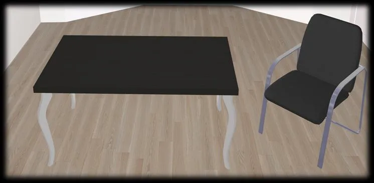
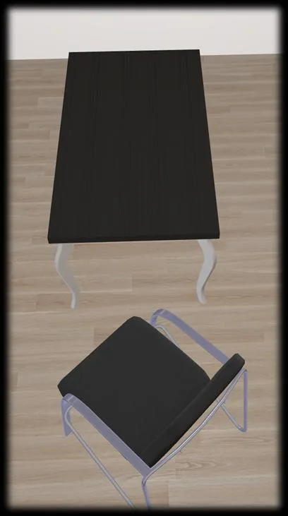
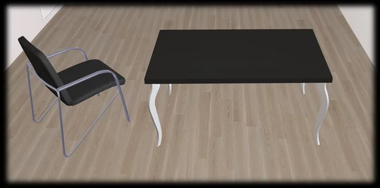
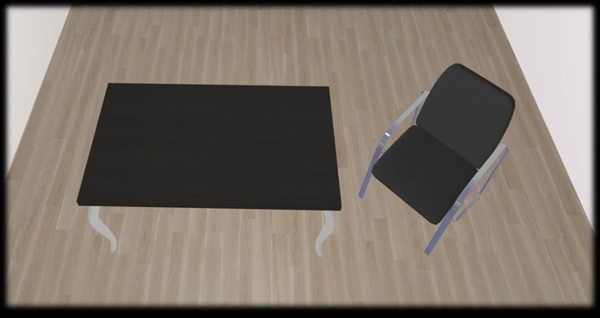
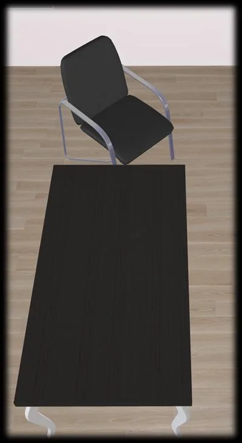
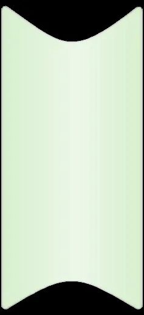

TAD：面向视角鲁棒 3D 场景图生成的变换感知解耦Not All Relations Rotate Alike: Transformation-Aware Decoupling for Viewpoint-Robust 3D Scene Graph Generation
与 3D 场景理解、语义地图和具身空间推理相关；可作为 SLAM 后端语义层/场景图鲁棒性的参考。
一句话工作总结
该工作不做几何配准，但对机器人在不同视角下构建一致 3D 语义/关系地图有参考价值。
摘要
3D 场景图生成将场景组织为物体-关系-物体图，但同一 3D 场景在不同 yaw 视角下，关系谓词的变换行为并不一致：left/front/right/behind 等方向关系应随观察坐标变换，而支撑、接触、附着等关系应保持稳定。TAD 将关系推理分为视角稳定分支和方向变换分支，并用变换描述子、分组辅助监督和稳定物体表示提升在 yaw 改变下的鲁棒性。3DSSG 实验表明，在不依赖训练时旋转增强的条件下，TAD 在视角变化鲁棒性上达到 SOTA，同时保持标准基准性能。
3D Scene Graph Generation (3DSGG) represents 3D scenes as structured object-relation-object graphs, providing a compact relational abstraction for spatial understanding. In embodied intelligence settings, the same 3D scene may be observed by agents from viewpoints that differ by yaw rotations. However, current 3DSGG models often fail to produce relation predictions that follow the expected transformation behavior under such viewpoint shifts. This behavior reveals an empirical mismatch related to predicate-level transformation heterogeneity: directional predicates such as left, front, right, and behind should transform with the observation frame, whereas most contact, support, and semantic predicates such as standing on and attached to should remain stable. To reduce this mismatch, we propose Transformation-Aware Decoupling (TAD), a viewpoint-robust 3DSGG framework that decouples relation reasoning according to predicate transformation behavior and is supported by viewpoint-stable object representations. TAD decomposes relation reasoning into two parts: one learns cues that should stay stable across viewpoints, while the other learns directional cues that should change with the observation frame. The two parts are merged for standard multi-label predicate prediction. Transformation-specific descriptors and group-aware auxiliary supervision encourage the two branches to capture complementary relation cues. Extensive experiments on 3DSSG show that TAD achieves state-of-the-art robustness under yaw viewpoint changes without training-time rotation augmentation, while maintaining competitive performance under the standard benchmark. The project page is available at https://tad-predicate.github.io/.
中文解读摘录
- 为什么看：语义 SLAM/具身地图最终需要稳定的 3D 场景关系；该文处理同一场景在不同 yaw 视角下关系谓词是否应变化的问题。
- 方法要点：将关系推理拆成“视角稳定”与“方向变换”两类分支，对 left/front/right/behind 等方向关系和支撑/接触/附着等稳定关系区别建模。
- 结果信号：3DSSG 上在不使用训练时旋转增强的条件下获得更强视角鲁棒性，同时保持标准 benchmark 性能。
- 跟踪建议：如果后续做语义地图或 3D scene graph 后端，可参考它的谓词分组和坐标系变换监督设计。
- 链接：abs · PDF · 项目页：https://tad-predicate.github.io/
图表/页面预览
{kind=link}

{kind=link}

{kind=link}

{kind=link}

{kind=link}

{kind=link}
